Jenkins
Jenkins 是一个基于 Java 语言开发的持续构建工具平台，主要用于持续、自动的构建/测试你的软件和项目。它可以执行你预先设定好的设置和构建脚本，也可以和 Git 代码库做集成，实现自动触发和定时触发构建。
安装 OpenJDK
因为 Jenkins 是 Java 编写的持续构建平台，因此需要安装 Java。在这里，我们选择安装开源的 openjdk 。在这我们直接使用 yum 包管理器安装 openjdk 即可。
yum install -y java
安装 Jenkins
下载 Jenkins 到 /data 目录，此处使用清华镜像源，建议替换为可使用的版本：
cd /data
wget https://mirrors.tuna.tsinghua.edu.cn/jenkins/redhat-stable/jenkins-2.332.3-1.1.noarch.rpm
sudo yum install jenkins-2.332.3-1.1.noarch.rpm
启动 Jenkins
Jenkins 安装后，会将启动命令注册到系统 Service 命令中。所以我们直接使用系统 service 命令启动 Jenkins 即可。
在这里，有三个命令可以使用，分别对应启动、重启、停止 三个命令。
service jenkins start
# service jenkins restart restart 重启 Jenkins
# service jenkins restart stop 停止 Jenkins
初始化 Jenkins 配置
Jenkins 服务启动后将部署到 8080 端口，可以通过浏览器进行服务访问。
解锁 Jenkins
在 Jenkins 启动完成后，会自动跳转至这个界面。这是 Jenkins 的解锁界面，你需要输入存放在服务器的初始解锁密码才能进行下一步操作。
Jenkins 启动后，会生成一个初始密码。该密码在服务器的文件内存放，我们可以进入服务器查看密码内容，将密码填写在 Jenkins 的管理员密码输入框内：
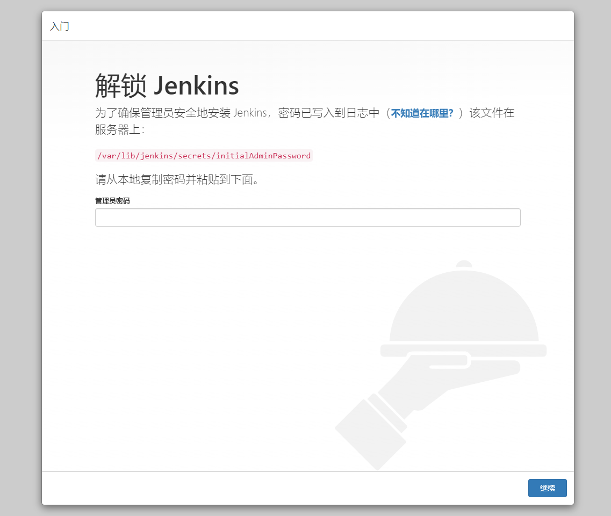
输入密码并且点击“继续”按钮后即可解锁 Jenkins。
下载插件
解锁后就来到了插件下载页面，这一步要下载一些 Jenkins 的功能插件。
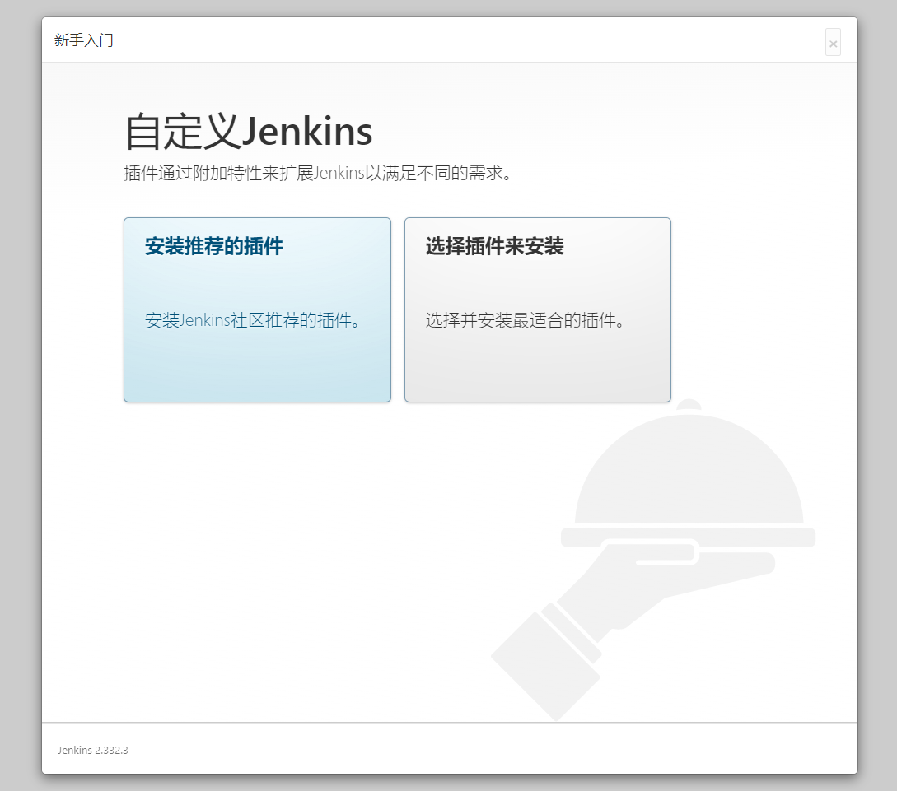
因为 Jenkins 插件服务器在国外，所以速度不太理想。我们需要更换为清华大学的 Jenkins 插件源后，再安装插件，所以先不要点安装插件。
更换方法很简单。进入服务器，将 /var/lib/jenkins/updates/default.json 内的插件源地址替换成清华大学的源地址，将 google 替换为 baidu 即可。
sed -i 's/http:\/\/updates.jenkins-ci.org\/download/https:\/\/mirrors.tuna.tsinghua.edu.cn\/jenkins/g' /var/lib/jenkins/updates/default.json && sed -i 's/http:\/\/www.google.com/https:\/\/www.baidu.com/g' /var/lib/jenkins/updates/default.json
接着点击“安装推荐的插件”即可，稍等一会插件安装完毕。
完成安装
插件安装完毕后，接着是注册管理员账号。
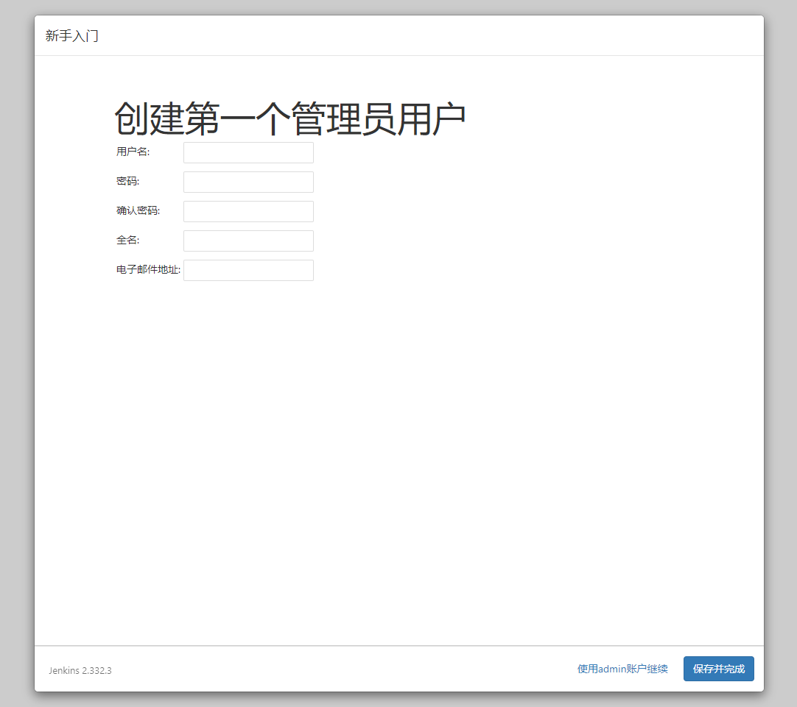
注册结束后看见该页面说明已经安装完成。
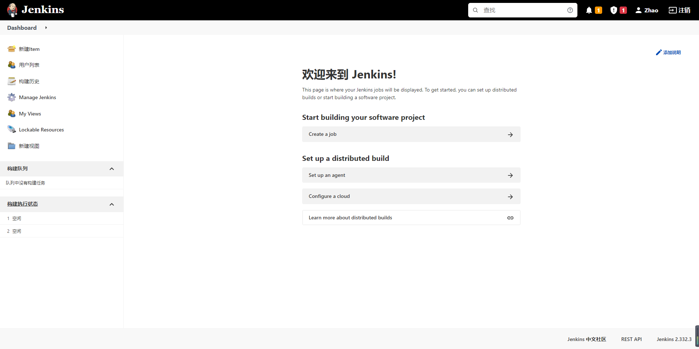
测试安装
到这里，我们的 Jenkins 算是启动成功了。但是，我们还需要对 Jenkins 做一点点简单的配置，才可以让它可以构建 docker 镜像。
我们可以在首页点击左侧导航栏的新建 Item，输入任务名并选择 Freestyle project 以创建一个任务。
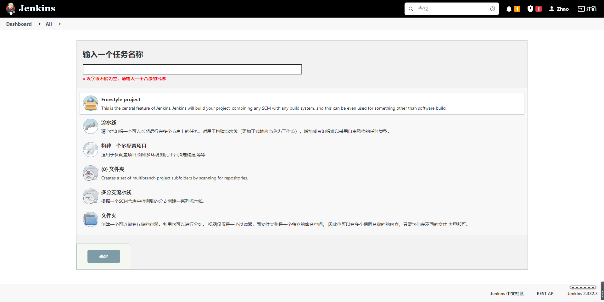
新建完毕后，找到“构建”一项，选择“增加构建步骤”，选择“执行 shell”，输入以下命令:
docker -v
docker pull node:latest
该命令会去拉取一个 nodejs 稳定版的镜像，我们可以来测试 Docker 的可用性。
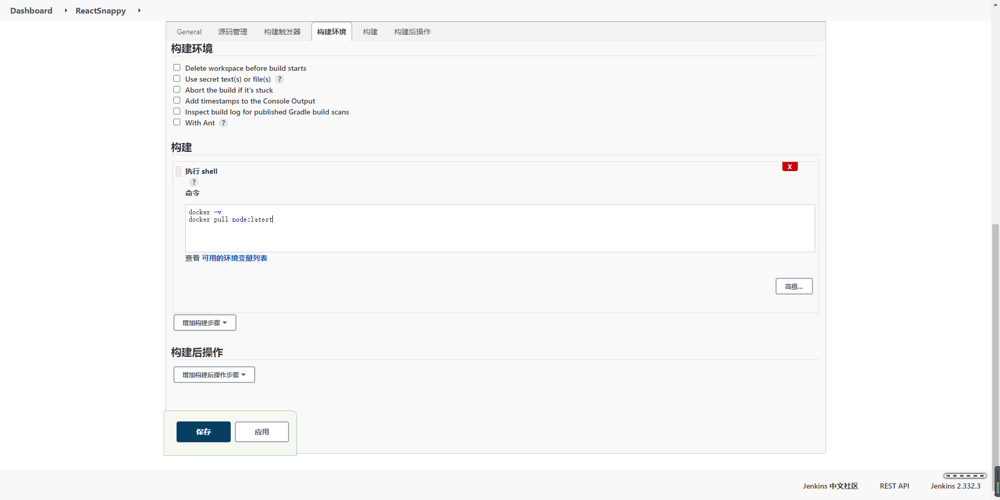
保存后，我们点击“立即构建”后，Jenkins 就会开始构建。
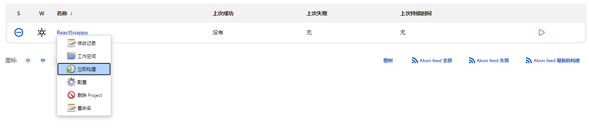
选择左侧历史记录第一项（最新的一项），点击控制台输出，查看构建日志,执行后，我们发现提示无访问权限。这是由于在 Linux 中， Unix socket 属于 root 用户，因此需要 root 权限才能访问。
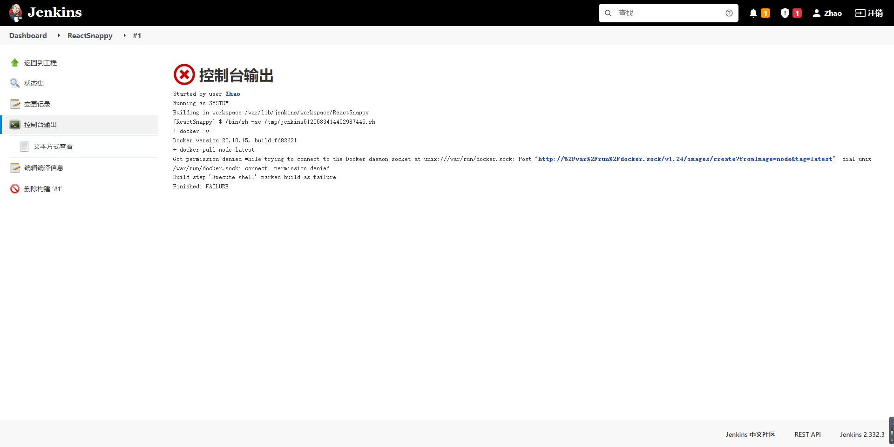
在 docker 中， docker 提供了一个用户组的概念。我们可以将执行 Shell 的用户添加到名称为 docker 的用户组，则可以正常执行 docker 命令。而在 Jenkins 中执行的终端用户做 jenkins ，所以我们只需要将 jenkins 加入到 docker 用户组即可。
sudo groupadd docker #新增docker用户组
sudo gpasswd -a jenkins docker #将当前用户添加至docker用户组
newgrp docker #更新docker用户组
加入后重启Jenkins：
sudo service jenkins restart
重启Jenkins后再次执行脚本，此时执行成功：
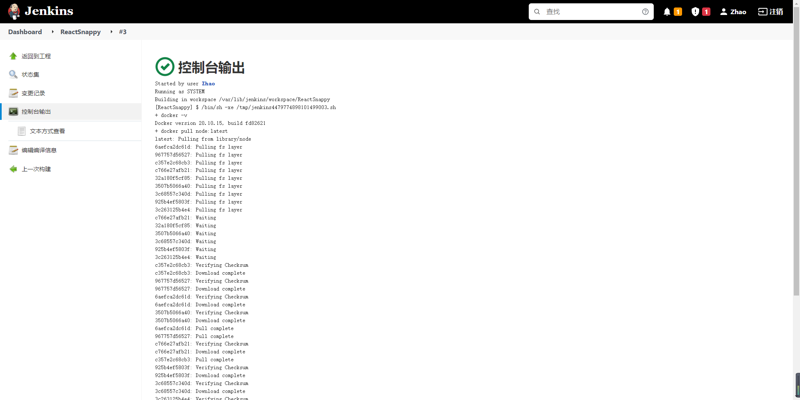
docker 配置
此时我们查看 docker 的镜像 docker images 时可以发现增加了 docker 的 node 镜像，这是我们通过 Jenkins 自动安装的：
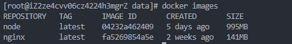
进入此 docker 镜像：
docker run -it node /bin/bash
进入 docker 镜像后对其进行一定的配置
# 配置淘宝镜像源
npm config set registry https://registry.npm.taobao.org
npm get registry
# 可能提示已安装，就不用再安装了
npm install yarn -g
yarn config set registry http://registry.npm.taobao.org/
yarn config get registry
# 退出docker镜像
exit
使用 SSH 协议集成 Git 仓库源
在这步中，我们将使用 Jenkins 集成外部 Git 仓库，实现对真实代码的拉取和构建。
服务器安装 git
使用 yum -y install git 指令安装 git，安装后使用 git --verison 查看是否安装成功。
生成公钥私钥
首先，我们先来配置公钥和私钥。这是 Jenkins 访问 Git 私有库的常用认证方式。我们可以使用 ssh-keygen 命令即可生成公钥私钥。
ssh-keygen -t rsa -C "269629082@qq.com"
执行后，会遇到第一步骤：Enter file in which to save the key 。这一步是询问你要将公钥私钥文件放在哪里。默认是放在 ~/.ssh/id_rsa 下，当然也可以选择输入你自己的路径。结束后，你会得到两个文件。分别是 id_rsa 和 id_rsa.pub。其中，id_rsa 是私钥文件，id_rsa.pub 是对应的公钥文件。我们需要在 Git 端配置公钥，在 Jenkins 端使用私钥与 Git 进行身份校验。
在 Gitee 中配置公钥
在 Gitee 中添加 SSH 公钥，其中的公钥为刚才生成的 id_rsa.pub 文件，可以使用 cat ~/.ssh/id_rsa.pub 进行查看。
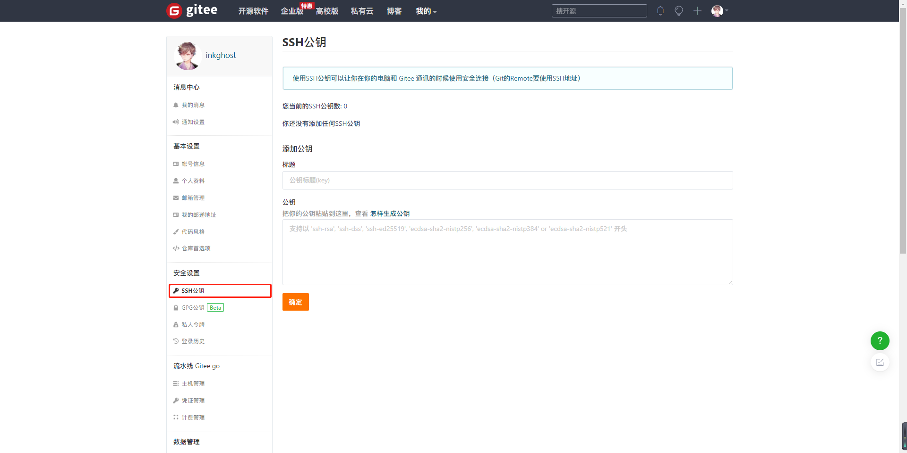
在 Jenkins 配置私钥
在 Jenkins 中，私钥/密码等认证信息都是以“凭证”的方式管理的，所以可以做到全局都通用。我们可以在配置任务时，来添加一个自己的“凭证”。点击项目的“配置”，依次找到 “源码管理” => “Git” => “Repositories”。
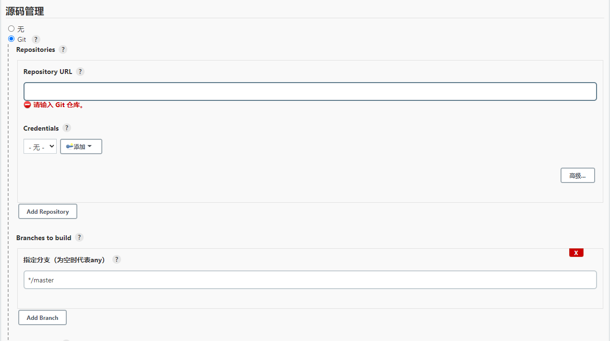
Repository URL 则是我们的仓库地址， SSH 地址格式为 git@gitee.com:xxx/xxx.git。
Credentials 是我们选择认证凭证的地方。我们可以点击右侧 “添加” => “Jenkins” 按钮添加一条新的凭证认证信息。点击后会打开一个弹窗，这是 Jenkins 添加凭证的弹窗。选择类型中的 SSH Username with private key 这一项。接着填写信息即可：
ID：这条认证凭证在 Jenkins 中的名称是什么
描述：描述信息
Username：用户名（邮箱）
Private Key：这里则是我们填写私钥的地方
在命令行窗口，查看私钥文件内容，并复制它 cat ~/.ssh/id_rsa。点击 Add 按钮，将私钥文件内所有文件内容全部复制过去（包含开头的 BEGIN OPENSSH PRIVATE KEY 和结尾的 END OPENSSH PRIVATE KEY）接着点击添加按钮，保存凭证。
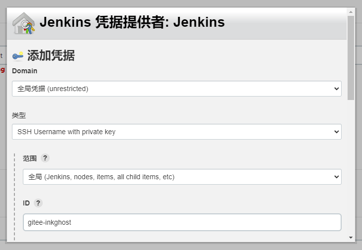
选择凭证后若无其他提示则说明身份校验成功。
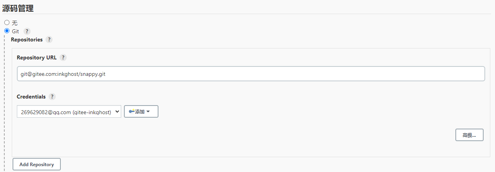